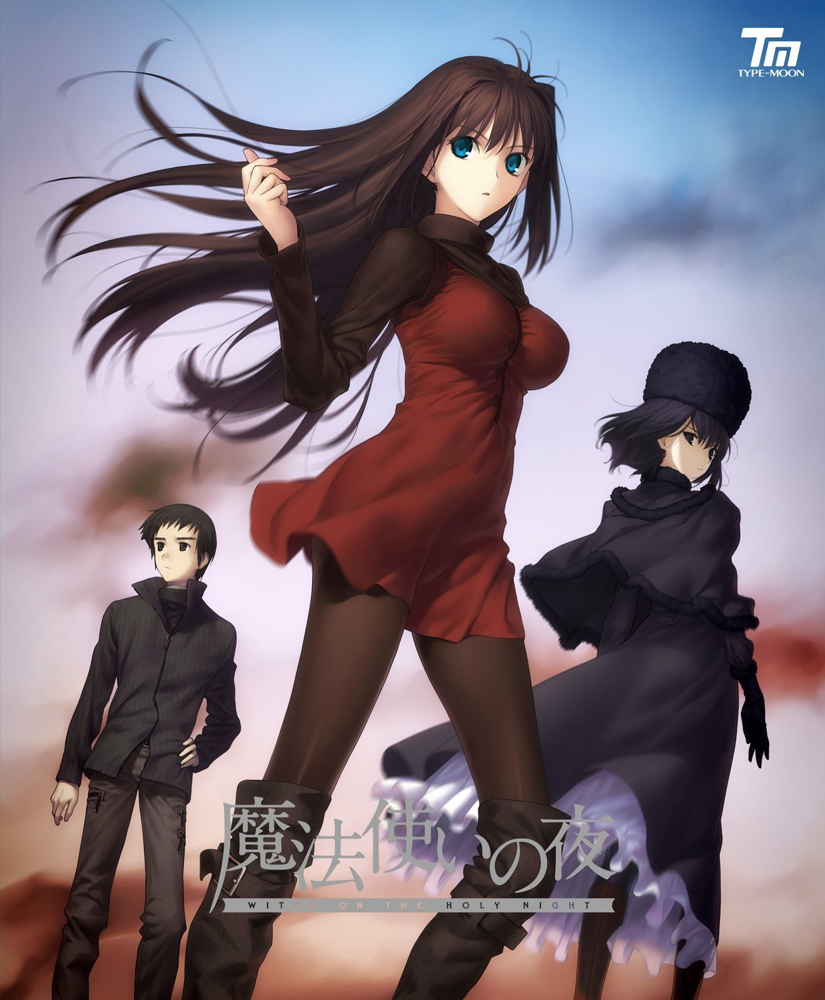

魔法使いの夜
游戏公司 : TYPE-MOON
使用平台 : Windows XP/Vista /7
PlayStation 4 任天堂Switch
首发日期 : 2012年4月12日（初回版）
制作人 : 武内崇 | 编剧 : 奈须蘑菇 | 美术 : 小山广和
音乐 : 深泽秀行 / KATE / James Harris / hil
作品分级 : 全年龄
结局数 : 1
剧情简介
1980年代后半，正是繁华与活力的时代的末期。在地方都市三咲町，有传言说「在坡道上的房子里，住着两个魔女」。从乡村来到三咲町的少年静希草十郎，与转入学校的学生会长苍崎青子，以及孤高的美少女久远寺有珠相遇了。实际上，这两人正是坡道上的房子里住着的魔女。由于一系列的事件，完全没有共同点的三人在久远寺宅邸中开始了共同生活。
username 2022-09-27 22:08:07
hen good play,zhi de play many times.